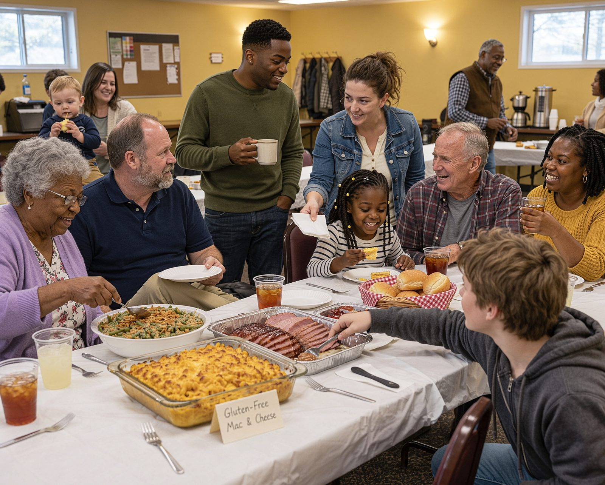

Events
What's happening
From Sunday worship to special events, there's always a way to get connected. Our full calendar lives on Church Center, where you can also sign up for events.
Suggested photo: church family sharing a potluck meal

Every week
Sundays
Worship at 10:00 AM
Come early for coffee, community and conversation. Kingdom Kids & Teens meet during worship.
Wednesdays
Bible study at 6:00 PM
Grow deeper in God's Word together.
Questions about an event?
We're happy to help.